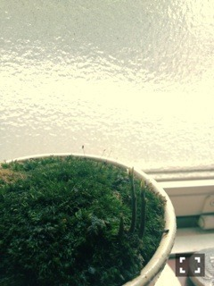

| 2013/07 05 Fri | 454回目*marika |

のびてきた。3本の。
ムーミンのニョキニョキみたい
今日は全握のリハでした。
隣を見たらスタッフさんの
パソコンの入れ物が
ムーミンのニョキニョキのイラストで
おもわず「あっ！」
っと声を出してしまいました。
家に帰ってもう一度ちゃんと
ムーミンのキャラクターを
検索しました。
ニョキニョキじゃなくて
ニョロニョロでした。
ごめんニョロニョロ。
とりあえず今日も苔かわいい。
テスト終わったから
帰り道が楽しかったーーーー
るんるんるんるんるんるんるんる
 ♪♪♪
♪♪♪
**********
 今回個人PVが無くなったけど、
今回個人PVが無くなったけど、
まりっかは、また個人PVを
やってみたいと思いますか？
 個人pvで私を知ってくださった方や
個人pvで私を知ってくださった方や
推しになってくださった方が
多いので、また機会があれば
やりたいな

個人で撮影できるのって、
すごい良い経験だし嬉しいので。
みんな去年悔しい思いしてる
今年のプリンシパルはどうでした？
本当は去年のプリンシパル
思い出したくないんです。
deuxは一幕の内容的にも
去年より精神的に
少し楽になったのですが
やっぱり辛いし悔しかった。
でもその分自分に自信がついたし、
新しい発見もあったし。
こういう形の公演は
他のグループに絶対やらせたくない。
乃木坂のものにしたいです。
生クリームって簡単に
洗い流せるものなの？
3回くらい髪洗った笑
生クリームは美味しかった？
甘かった
 今回の曲でまりかのお気に入りは？
コウモリよ、他の星から
今回の曲でまりかのお気に入りは？
コウモリよ、他の星から
**********
リハの前に幼なじみの親友と
おしゃべりしたー
楽だなあ。
安心していっぱいしゃべったなあ

＼ゆったん／

全握楽しみだなーふっふー
♪
♪
まりか
コメント(279)
2013/07/05 23:36